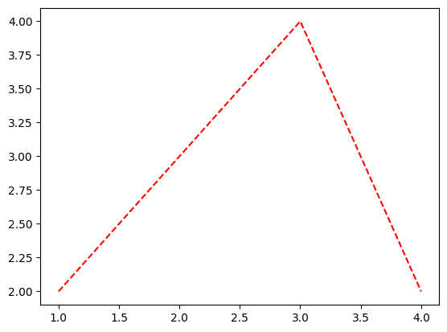
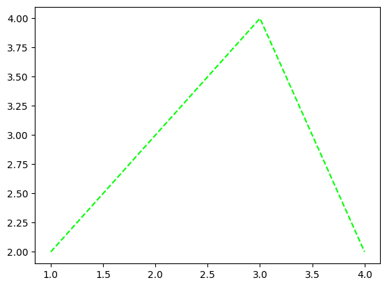
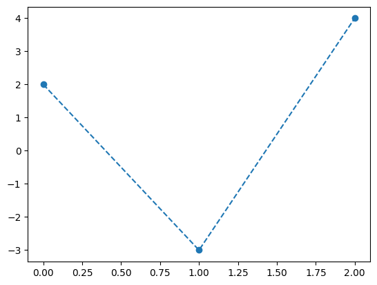

import time
import collections
import numpy as np
import matplotlib.pyplot as plt14wk-2: 클래스 (4)
1. 강의영상
2. Imports
3. 타입힌트
A. 왜 배워야함?
name: str = "Alice"
age: int = 30
height: float = 1.75
is_student: bool = True함수 매개변수와 반환값에 타입지정
def greet(name: str) -> str:
return f"Hello, {name}!"
def add(a: int, b: int) -> int:
return a + b
def get_length(lst: list) -> int:
return len(lst)복합타입지정
from typing import List, Tuple, Dict
def process_items(items: List[str]) -> int:
return len(items)
def get_coordinates() -> Tuple[float, float]:
return (45.0, 90.0)
def count_words(text: str) -> Dict[str, int]:
words = text.split()
return {word: words.count(word) for word in words}Optional 타입
from typing import Optional
def find_item(items: List[str], search: str) -> Optional[int]:
try:
return items.index(search)
except ValueError:
return None사용자 정의 타입
from typing import Optional
def find_item(items: List[str], search: str) -> Optional[int]:
try:
return items.index(search)
except ValueError:
return NoneUnion 타입
from typing import Union
def process_value(value: Union[int, str]) -> str:
if isinstance(value, int):
return f"Number: {value}"
else:
return f"String: {value}"Any
from typing import Any
def print_value(value: Any) -> None:
print(value)Callable 타입
from typing import Callable
def apply_function(x: int, func: Callable[[int], int]) -> int:
return func(x)
def square(n: int) -> int:
return n * n
result = apply_function(5, square)
print(result) # 출력: 25254. 함수
A. 대표예시
# 예제1 – 은근히 짜증났던 plt.plot()
plt.plot([1,2,3,4],[2,3,4,2],'r--')
plt.plot([1,2,3,4],[2,3,4,2],color='lime','--')SyntaxError: positional argument follows keyword argument (2277522587.py, line 1)plt.plot([1,2,3,4],[2,3,4,2],'--',color='lime')
#
B. 개념
func(arg1, arg2, /, *args, x1, x2, *, kwarg1, kwarg2, **kwargs):- 정리
| |존재해야함|생략가능|
위치인자|C. 개념을 위한 예제들
예제1 – 두 벡터 x,y가 주어졌을때 R에서 cbind와 같은 역할을 하는 함수를 구현하라.

def cbind(x,y):
rslt = np.stack([x,y],axis=1)
return rslt cbind([2,3,4],[5,4,2])array([[2, 5],
[3, 4],
[4, 2]])#
# 예제2 – 세개이상의 벡터가 온다면?
- args를 이용하여 이후 입력을 받음
def cbind(*args):
rslt = np.stack(args,axis=1)
return rslt cbind([1,1,1],[2,2,2],[3,3,3],[4,4,4])array([[1, 2, 3, 4],
[1, 2, 3, 4],
[1, 2, 3, 4]])- args는 함수내부에서 “튜플”로 취급된다!!
#
# 예제3 – 기본적으로는 cbind의 동작을 하지만 경우에 따라서 rbind처럼 동작하길 원한다면?
- axis라는 변수를 따로 생성하여 입력으로 처리, 기본값은 1
def bind(*args,axis=1):
rslt = np.stack(args,axis=axis)
return rslt bind([1,1,1],[2,2,2],[3,3,3],axis=0)array([[1, 1, 1],
[2, 2, 2],
[3, 3, 3]])#
# 예제4 – stack의 다른 부가적인 옵션도 쓰고싶다면?
- np.stack은 여러기능이 있음
np.stack?Signature: np.stack(arrays, axis=0, out=None, *, dtype=None, casting='same_kind') Call signature: np.stack(*args, **kwargs) Type: _ArrayFunctionDispatcher String form: <function stack at 0x7f1032daf520> File: ~/anaconda3/envs/r/lib/python3.10/site-packages/numpy/core/shape_base.py Docstring: Join a sequence of arrays along a new axis. The ``axis`` parameter specifies the index of the new axis in the dimensions of the result. For example, if ``axis=0`` it will be the first dimension and if ``axis=-1`` it will be the last dimension. .. versionadded:: 1.10.0 Parameters ---------- arrays : sequence of array_like Each array must have the same shape. axis : int, optional The axis in the result array along which the input arrays are stacked. out : ndarray, optional If provided, the destination to place the result. The shape must be correct, matching that of what stack would have returned if no out argument were specified. dtype : str or dtype If provided, the destination array will have this dtype. Cannot be provided together with `out`. .. versionadded:: 1.24 casting : {'no', 'equiv', 'safe', 'same_kind', 'unsafe'}, optional Controls what kind of data casting may occur. Defaults to 'same_kind'. .. versionadded:: 1.24 Returns ------- stacked : ndarray The stacked array has one more dimension than the input arrays. See Also -------- concatenate : Join a sequence of arrays along an existing axis. block : Assemble an nd-array from nested lists of blocks. split : Split array into a list of multiple sub-arrays of equal size. Examples -------- >>> arrays = [np.random.randn(3, 4) for _ in range(10)] >>> np.stack(arrays, axis=0).shape (10, 3, 4) >>> np.stack(arrays, axis=1).shape (3, 10, 4) >>> np.stack(arrays, axis=2).shape (3, 4, 10) >>> a = np.array([1, 2, 3]) >>> b = np.array([4, 5, 6]) >>> np.stack((a, b)) array([[1, 2, 3], [4, 5, 6]]) >>> np.stack((a, b), axis=-1) array([[1, 4], [2, 5], [3, 6]]) Class docstring: Class to wrap functions with checks for __array_function__ overrides. All arguments are required, and can only be passed by position. Parameters ---------- dispatcher : function or None The dispatcher function that returns a single sequence-like object of all arguments relevant. It must have the same signature (except the default values) as the actual implementation. If ``None``, this is a ``like=`` dispatcher and the ``_ArrayFunctionDispatcher`` must be called with ``like`` as the first (additional and positional) argument. implementation : function Function that implements the operation on NumPy arrays without overrides. Arguments passed calling the ``_ArrayFunctionDispatcher`` will be forwarded to this (and the ``dispatcher``) as if using ``*args, **kwargs``. Attributes ---------- _implementation : function The original implementation passed in.
def bind(*args,axis=1,**kwargs):
rslt = np.stack(args,axis=axis,**kwargs)
return rslt bind([1,1,1],[2,2,2],[3,3,3],axis=0,dtype=float)array([[1., 1., 1.],
[2., 2., 2.],
[3., 3., 3.]])#
# 예제6 – 위치인자를 키워드인자보다 뒤에 넣을 경우?
bind(axis=0,[1,2,3],[2,3,4])SyntaxError: positional argument follows keyword argument (3063801598.py, line 1)bind([1,2,3],[2,3,4],axis=0)array([[1, 2, 3],
[2, 3, 4]])bind([1,2,3],[2,3,4],axis=0,[3,4,5])SyntaxError: positional argument follows keyword argument (3465570716.py, line 1)#
# 예제7 – 가변키워드인자가 존재할 때, 키워드인자의 키를 잘못 입력할 경우?
bind([1,2,3],[2,3,4],axis=0,data_type=float)TypeError: stack() got an unexpected keyword argument 'data_type'- 요약
- 함수의 입력은 꽤 복잡한 방식으로 동작한다.
- 위치인자의 위치를 잘못 넣으면 동작하지 않는다.
- 가변키워드 인자가 존재할 때, 키워드인자의 키를 다른이름으로 넣으면 에러가 발생하지 않는다. (그냥 무시)
#
5. with
A. 대표예제
- 예제1
f=open('test.txt')a=f.read()print(a)hello
hello2
hello3f.closedFalse현재 f가 열려있는 상태이다. 따라서 닫아줘야 한다.
f.close()f.closedTruef가 닫힌 상태에서는 더 이상 읽을 수가 없다.
b=f.read()ValueError: I/O operation on closed file.파일을 닫지 않는다고 해서 큰 문제는 없어보이지만 그냥 닫는것이 좋다.
B. 개념
- 생각해 보니까 파일을 열면 항상 닫아야 한다.
이처럼 쌍(시작-끝)으로 수행되는 처리가 반복적으로 발생하는 경우가 있는데 그때마다 .close() 메소드 따위를 쓰는 것이 번거롭게 느껴진다.
예를들면 파일을 열었으면 적당한 동작뒤에 알아서 닫아졌으면 좋겠다는 것이다.
이러한 모티브에서 구현된 것이 with문 이다.
with open('test.txt') as g:
print(g.read())hello
hello2
hello3파일이 닫아졌는지 확인해보자.
g.closedTrue잘 닫아졌다.
기본사용법
with의 사용법은 직관적으로 이해가 가능하지만 그래도 다시한번 살펴보자.
with blabla as variable:
yadiyadi
yadiyadi2with blabla as variable에서 blabla가 실행된다.blabla의 실행결과로 어떠한
특별한오브젝트가 만들어지는데 그 오브젝트를 우리가 variable로 부르기로 한다.탭으로 들여쓰기된 부분, 즉 yadiyadi, yadiyadi2 가 순서대로 실행된다.
탭으로 들여쓰기된 부분이 실행되고 난 뒤에
g.closed()따위의 미리 약속된 어떠한 코드가 실행되는것 같다.
동작원리
g라는 오브젝트는 특별한 오브젝트라고 했는데, 무엇이 특별한지 알아보자.
dir(g)['_CHUNK_SIZE',
'__class__',
'__del__',
'__delattr__',
'__dict__',
'__dir__',
'__doc__',
'__enter__',
'__eq__',
'__exit__',
'__format__',
'__ge__',
'__getattribute__',
'__gt__',
'__hash__',
'__init__',
'__init_subclass__',
'__iter__',
'__le__',
'__lt__',
'__ne__',
'__new__',
'__next__',
'__reduce__',
'__reduce_ex__',
'__repr__',
'__setattr__',
'__sizeof__',
'__str__',
'__subclasshook__',
'_checkClosed',
'_checkReadable',
'_checkSeekable',
'_checkWritable',
'_finalizing',
'buffer',
'close',
'closed',
'detach',
'encoding',
'errors',
'fileno',
'flush',
'isatty',
'line_buffering',
'mode',
'name',
'newlines',
'read',
'readable',
'readline',
'readlines',
'reconfigure',
'seek',
'seekable',
'tell',
'truncate',
'writable',
'write',
'write_through',
'writelines']비밀은 __enter__ 와 __exit__ 메소드에 있다.
__enter__ 와 __exit__ 의 역할을 알아보기 위해서 아래의 코드를 다시 관찰하자.
with open('test.txt') as g:
print(g.read())(for문 복습) for i in ...: 에서 ...에 올 수 있는 오브젝트는 __iter__ 메소드가 정의되어 있어야 한다. 이러한 오브젝트를 iterable한 오브젝트라고 한다.
(with문) with ... as variable: 에서 ...의 실행결과로 생성되는 오브젝트는 __enter__ 와 __exit__ 메소드가 정의되어 있어야 한다. - 이중 __enter__는 with문이 시작되면 자동으로 실행된다. - 이중 __exit__는 with문이 끝나면 자동으로 실행된다.
자료의 형태변환
C. 개념을 위한 예제들
- 예제3
class MooYaHo:
def __init__(self):
print('init')
def __enter__(self):
print('무야호')
def __exit__(self,exc_type,exc_value,traceback): # self 이외의 3가지 변수는 예외처리에 관련된 변수인데 여기서는 다루지 않음.
print('그만큼 신나시는거지')with MooYaHo() as a:
print('.')init
무야호
.
그만큼 신나시는거지- 경우에 따라서는 as 이하를 생략할 수도 있다.
with MooYaHo():
print('xx')init
무야호
xx
그만큼 신나시는거지6. 데코레이터
A. 개념
- 데코레이터 쓰는법
- 함수입력,함수출력을 수행하는 함수를 만든다.
- 입력함수 위에 데코를 쓴다. 그러면 그 입력함수는 출력함수로 바뀐다.
- 데코레이터 코드 템플릿1 – 이걸 외우진 마세요
데코레이터 선언
def decorator_name(func):
...
return wrapperdef 꾸밈함수이름(입력함수):
...
return 출력함수데코레이터 사용
@decorator_name
def myfunc():
pass@꾸밈함수이름
def 꾸밈당하는함수():
pass # 예제1 – 코드 템플릿1: 사용예시
# 데코레이터 선언
def 무조건메롱을리턴(func):
wrapper = lambda x: "메롱"
return wrapperdef f(x):
return x**2
list(map(f,[1,2,3,4,5]))[1, 4, 9, 16, 25]@무조건메롱을리턴
def f(x):
return x**2
list(map(f,[1,2,3,4,5]))['메롱', '메롱', '메롱', '메롱', '메롱']#
# 예제2 – 데코레이터와 같은코드
- 코드1
def 무조건메롱을리턴(func):
wrapper = lambda x: "메롱"
return wrapper
def f(x):
return x**2
f = 무조건메롱을리턴(f)
[f(x) for x in range(5)]['메롱', '메롱', '메롱', '메롱', '메롱']- 코드2
def 무조건메롱을리턴(func):
wrapper = lambda x: "메롱"
return wrapper
@무조건메롱을리턴
def f(x):
return x**2
[f(x) for x in range(5)]['메롱', '메롱', '메롱', '메롱', '메롱']- 좀 더 확장하면..
@dec2
@dec1
def func(arg1, arg2, ...):
passdef func(arg1, arg2, ...);
pass
func = dec2(dec1(func))- 데코레이터 코드 템플릿2 – 아래의 형태를 기억할것
def decorator_name(func):
def wrapper(*args, **kwargs):
args = list(args)
kwargs = dict(kwargs)
func_result = func(*args, **kwargs)
return func_result
return wrapperdef 꾸밈함수이름(입력함수):
def 출력함수(*args, **kwargs):
args = list(args)
kwargs = dict(kwargs)
입력함수의출력 = 입력함수(*args, **kwargs)
return 입력함수의출력
return 출력함수B. 대표예시
# 예제1 – 출력결과는 항상 리스트로
def 출력은리스트로(func):
def wrapper(*args,**kwargs):
func_result = func(*args,**kwargs)
return list(func_result)
return wrapperdef 입력은넘파이로(func):
def wrapper(*args,**kwargs):
args = [np.array(l) for l in args]
kwargs = {k:np.array(v) for k,v in kwargs.items()}
func_result = func(*args,**kwargs)
return func_result
return wrapper@출력은리스트로
@입력은넘파이로
def add(a,b):
return a+b add([1,2,3],[2,3,4])[3, 5, 7]#
# 예시2 – 실행시간측정
def 시간측정(func):
def wrapper(*args,**kwargs):
t1 = time.time()
func_result = func(*args,**kwargs)
t2 = time.time()
print(f"실행시간: {t2-t1}")
return func_result
return wrapper@시간측정
@출력은리스트로
@입력은넘파이로
def sub(a,b):
return a-b sub([1,2,3],[1,2,3])실행시간: 2.6464462280273438e-05[0, 0, 0]#
# 예시3 – 출력결과 시각화
def 출력시각화(func):
def wrapper(*args,**kwargs):
func_result = func(*args,**kwargs)
plt.plot(func_result,'--o')
return func_result
return wrapper@출력시각화
@입력은넘파이로
def mul(a,b):
return a*b mul([1,-1,1],[2,3,4])array([ 2, -3, 4])
C. 내장 데코레이터
- 아래는 모두 내장데코레이터였음..
@staticmethod
@classmethod
@staticmethod7. 제너레이터
A. 대표예제
# 예시1 – for/if 마스터..
att = np.random.choice(np.arange(10,21)*5,20); rep = np.random.choice(np.arange(5,21)*5,20); mid = np.random.choice(np.arange(0,21)*5,20); fin = np.random.choice(np.arange(0,21)*5,20)
df = pd.DataFrame({'att':att,'rep':rep,'mid':mid,'fin':fin})
df| att | rep | mid | fin | |
|---|---|---|---|---|
| 0 | 80 | 55 | 65 | 95 |
| 1 | 100 | 80 | 15 | 25 |
| 2 | 90 | 55 | 5 | 95 |
| 3 | 100 | 95 | 55 | 85 |
| 4 | 50 | 35 | 90 | 100 |
| 5 | 100 | 75 | 80 | 10 |
| 6 | 80 | 100 | 50 | 15 |
| 7 | 80 | 80 | 25 | 40 |
| 8 | 55 | 90 | 90 | 50 |
| 9 | 70 | 90 | 100 | 70 |
| 10 | 95 | 65 | 65 | 75 |
| 11 | 75 | 30 | 85 | 90 |
| 12 | 50 | 80 | 60 | 0 |
| 13 | 70 | 70 | 20 | 65 |
| 14 | 90 | 45 | 70 | 60 |
| 15 | 90 | 70 | 60 | 35 |
| 16 | 85 | 85 | 45 | 60 |
| 17 | 100 | 80 | 50 | 10 |
| 18 | 100 | 95 | 95 | 55 |
| 19 | 55 | 65 | 0 | 5 |
grades = []
for i in range(len(df)):
row = df.iloc[i]
att,rep,mid,fin = row
total = att*0.1 + rep*0.2 + mid *0.3 + fin*0.4
if total >= 70:
grade = "A+"
elif 40 < total:
grade = "B0"
else:
grade = "F"
grades.append(grade)grades['B0',
'A+',
'B0',
'F',
'B0',
'B0',
'B0',
'B0',
'B0',
'A+',
'A+',
'A+',
'B0',
'B0',
'B0',
'A+',
'B0',
'B0',
'B0',
'B0']#
# 예시2 – 사실 머리속에는 파이프라인의 개념이 있지 않나?
row = df.iloc[0]
rowatt 50
rep 85
mid 60
fin 5
Name: 0, dtype: int64def calculate_total(row):
att, rep, mid, fin = row
total = att*0.1 + rep*0.2 + mid*0.3 + fin*0.4
return totaltotal = calculate_total(row)
total42.0def make_grade(total):
if total >= 70:
return "A+"
elif 40 < total:
return "B0"
else:
return "F" make_grade(total)'B0'# 깔끔 그자체
row = df.iloc[0]
total = calculate_total(row)
grade = make_grade(total) # 그렇지만 for문과 결합하면 더러워짐
n = len(df)
grades = []
for i in range(n):
row = df.iloc[i]
total = calculate_total(row)
grade = make_grade(total)
grades.append(grade)
grades['B0',
'A+',
'B0',
'F',
'B0',
'B0',
'B0',
'B0',
'B0',
'A+',
'A+',
'A+',
'B0',
'B0',
'B0',
'A+',
'B0',
'B0',
'B0',
'B0']# 예시3 – 제너레이터의 개발
- row-wise 하게 쪼갠다.
def each_row(df):
n = len(df)
for i in range(n):
yield df.iloc[i]rows = each_row(df) - total을 계산한다. (row 별로)
def calculate_total(rows):
for row in rows:
att, rep, mid, fin = row
total = att*0.1 + rep*0.2 + mid*0.3 + fin*0.4
yield totaltotals = calculate_total(rows)- grade를 계산한다 (row별로)
def make_grade(totals):
for total in totals:
if total >= 70:
yield "A+"
elif 40 < total:
yield "B0"
else:
yield "F"grades = make_grade(totals)- 합친다.. (형태변환)
list(grades)['A+',
'B0',
'B0',
'A+',
'A+',
'B0',
'B0',
'B0',
'A+',
'A+',
'A+',
'A+',
'F',
'B0',
'B0',
'B0',
'B0',
'B0',
'A+',
'F']- 최종코드
rows = each_row(df)
totals = calculate_total(rows)
grades = make_grade(totals)
df.assign(grade = list(grades))| att | rep | mid | fin | grade | |
|---|---|---|---|---|---|
| 0 | 80 | 55 | 65 | 95 | A+ |
| 1 | 100 | 80 | 15 | 25 | B0 |
| 2 | 90 | 55 | 5 | 95 | B0 |
| 3 | 100 | 95 | 55 | 85 | A+ |
| 4 | 50 | 35 | 90 | 100 | A+ |
| 5 | 100 | 75 | 80 | 10 | B0 |
| 6 | 80 | 100 | 50 | 15 | B0 |
| 7 | 80 | 80 | 25 | 40 | B0 |
| 8 | 55 | 90 | 90 | 50 | A+ |
| 9 | 70 | 90 | 100 | 70 | A+ |
| 10 | 95 | 65 | 65 | 75 | A+ |
| 11 | 75 | 30 | 85 | 90 | A+ |
| 12 | 50 | 80 | 60 | 0 | F |
| 13 | 70 | 70 | 20 | 65 | B0 |
| 14 | 90 | 45 | 70 | 60 | B0 |
| 15 | 90 | 70 | 60 | 35 | B0 |
| 16 | 85 | 85 | 45 | 60 | B0 |
| 17 | 100 | 80 | 50 | 10 | B0 |
| 18 | 100 | 95 | 95 | 55 | A+ |
| 19 | 55 | 65 | 0 | 5 | F |
#
B. 제너레이터의 개념
- 제너레이터의 정체: 이터레이터 + \(\alpha\)
lst = [1,2,3]
lst_iterator = iter(lst) isinstance(lst_iterator,collections.abc.Generator)Falsedef make_gen(lst):
for l in lst:
yield l lst_generator = make_gen(lst)isinstance(lst_generator,collections.abc.Generator)Truecollections.abc.Generator?Init signature: collections.abc.Generator() Docstring: <no docstring> File: ~/anaconda3/envs/r/lib/python3.10/collections/abc.py Type: ABCMeta Subclasses:
set(dir(lst_generator))-set(dir(lst_iterator)){'__del__',
'__name__',
'__qualname__',
'close',
'gi_code',
'gi_frame',
'gi_running',
'gi_yieldfrom',
'send',
'throw'}- 만드는 방법1: 함수를 이용하는 방법
def make_gen(lst):
for l in lst:
yield lmake_gen([1,2,3])<generator object make_gen at 0x7f10ff6f78b0>- 만드는 방법2: 제너레이터 표현식 (튜플 컴프리헨션이라고 속으로 생각해도 무방, 튜플 컴프리헨션은 없는 용어임)
(l for l in [1,2,3])<generator object <genexpr> at 0x7f10ff6f7a00>C. 개념을 위한 예제들
# 예시1
def make_gen():
yield 1
yield 2
yield 3
gen = make_generator()for i in gen:
print(i)1
2
3gen = make_gen()next(gen)1next(gen)2next(gen)3next(gen)StopIteration: #
# 예시2 – 무한시퀀스 + 지연실행
def make_gen():
a = 3
yield a
while True:
a = a+2
yield a gen = make_gen()lst = [] for _ in range(10):
lst.append(next(gen))lst[3, 5, 7, 9, 11, 13, 15, 17, 19, 21]for _ in range(10):
lst.append(next(gen))lst[3, 5, 7, 9, 11, 13, 15, 17, 19, 21, 23, 25, 27, 29, 31, 33, 35, 37, 39, 41]#
8. 상속
A. 상속의 사용방법
- 클래스를 조금 수정하고 싶을때, 아래와 같은 문법을 이용하면 편리하다.
class 새로운_클래스_이름(수정할_클래스_이름):
def 수정_및_추가할_함수이름(self,...):
...# 예시1 – UpJump
flowchart LR C[UpJump] --> |"거슬러올라가면"| A[Up]
class Up:
def __init__(self):
self.value = 0
def up(self):
self.value = self.value + 1
def __repr__(self):
return str(self.value) class UpJump(Up):
def jump(self,jump_size):
self.value = self.value + jump_size#
# 예시2 – AddMul 클래스
- Add 클래스 선언
class Add:
def __init__(self,a,b):
self.a = a
self.b = b
def add(self):
return self.a + self.b a = Add(2,3)a.add()5a.mul()AttributeError: 'Add' object has no attribute 'mul'- Mul 클래스 선언
class Mul:
def __init__(self,a,b):
self.a = a
self.b = b
def mul(self):
return self.a * self.b a = Mul(3,4)
a.mul()12a.add()AttributeError: 'Mul' object has no attribute 'add'- AddMul 클래스를 선언 (기존의 Add, Mul 상속받아서 이용)
flowchart LR C[AddMul] --> |"거슬러올라가면"| A[Add] C[AddMul] --> |"거슬러올라가면"| B[Mul]
class AddMul(Add,Mul):
pass a = AddMul(2,3)a.add()5a.mul()6어, 근데
__init__이 겹치지 않나?
class Add:
def __init__(self,a,b):
print("Add클래스에서 정의된 __init__ 메소드가 실행됩니다")
self.a = a
self.b = b
def add(self):
return self.a + self.b
class Mul:
def __init__(self,a,b):
print("Mul클래스에서 정의된 __init__ 메소드가 실행됩니다")
self.a = a
self.b = b
def mul(self):
return self.a * self.b
class AddMul(Add,Mul):
pass a = AddMul(5,6)Add클래스에서 정의된 __init__ 메소드가 실행됩니다- 알아서 교통정리함
- 교통정리하는 비법?
AddMul.__mro__(__main__.AddMul, __main__.Add, __main__.Mul, object)개념상 아래와 같은 서열인데,
flowchart LR B[Add] --> |"거슬러올라가면"| A[object] C[Mul] --> |"거슬러올라가면"| A[object] D[AddMul] --> |"거슬러올라가면"| B[Add] D[AddMul] --> |"거슬러올라가면"| C[Mul]
공식적으로는 아래와 같은 서열로 이해한다.
flowchart LR C[Mul] --> |"거슬러올라가면"| A[object] D[AddMul] --> |"거슬러올라가면"| B[Add] B[Add] --> |"거슬러올라가면"| C[Mul]
Note
모든 상속구조를 거슬러 올라가면 피라미드의 정점에 object 클래스가 있다. 즉 object는 최상위 super 클래스이다. 아래의 말을 기억하자.
모든 클래스는
type클래스에서 찍힌 인스턴스이며, 모든 클래스는object클래스의 subclass이다.
그냥 개념놀음임..
Warning
다이어그램 표시시 object는 앞으로 생략하겠음.
Note
아래는 같은코드임
# 코드1
class Klass():
pass# 코드2
class Klass(object):
pass코드1은 사실상 코드2의 생략버전임.
#
B. super()
# 예시1 – 기본적인 사용법
flowchart LR B[Student] --> |"거슬러올라가면"| A[StudentWrong]
class StudentWrong:
def __init__(self,age=20.0, semester=0):
self.age = age
self.semester = semester
print(f"입학을 축하합니다. 당신의 나이는 {self.age}이고 현재 학기는 {self.semester}학기 입니다.")
def __repr__(self):
text = f"나이: {self.age}\n학기: {self.semester}"
return text
def __add__(self,registration_status):
if registration_status == "휴학":
self.age = self.age +0.5
elif registration_status == "등록":
self.age = self.age +0.5
self.semester = self.semester + 1
class Student(StudentWrong):
def __add__(self,registration_status):
#super().__add__(registration_status) # 방법1
super(Student,self).__add__(registration_status) # 방법2
#super(__class__,self).__add__(registration_status) # 방법3
return selfboram = Student()입학을 축하합니다. 당신의 나이는 20.0이고 현재 학기는 0학기 입니다.boram + 1 + 2나이: 20.0
학기: 0#
- super()는 슈퍼클래스의 인스턴스 비슷한걸 리턴해준다. (유령이라 생각하자)

# 예시2 – 빙의
아래와 같은 문제를 풀고 싶다고 하자.
- 사과가 2개씩 3묶음 있다. 사과는 총 몇 묶음인가?
- 규빈은 지금 2층에 있다. 3층 아래로 내려가면 몇층인가?
- [1,2,3]의 평균은 얼마인가?
- 100을 3으로 나누면 나머지가 얼마인가?
- 2와 3의 최소공배수는 무엇인가?
flowchart LR B[ProblemSolver3] --> |"거슬러올라가면"| C[ProblemSolver2] C[ProblemSolver2] --> |"거슬러올라가면"| D[ProblemSolver1]
class ProblemSolver1():
def __init__(self):
self.sheet = ["?", "?", "?", "?", "?"]
def solve(self):
# 0. 사과가 2개씩 3묶음 있다. 사과는 총 몇 묶음인가?
self.sheet[0] = 6a = ProblemSolver1()a.sheet['?', '?', '?', '?', '?']a.solve()a.sheet[6, '?', '?', '?', '?']class ProblemSolver2(ProblemSolver1):
def solve(self):
# 2. [1,2,3]의 평균은 얼마인가?
# 3. 100을 3으로 나누면 나머지가 얼마인가?
# 4. 2와 3의 최소공배수는 무엇인가?
ghost1 = super()
ghost1.solve()
self.sheet[2] = 2
self.sheet[3] = 1
self.sheet[4] = 6a = ProblemSolver2()a.solve()a.sheet[6, '?', 2, 1, 6]class ProblemSolver3(ProblemSolver2):
def solve(self):
# 1. 규빈은 지금 2층에 있다. 3층 아래로 내려가면 몇층인가?
ghost2 = super()
ghost2.solve()
self.sheet[1] = -1
def say(self):
print("다풀었어요")a = ProblemSolver3()a.solve()a.sheet[6, -1, 2, 1, 6]a.say()다풀었어요그런데 2층에서 3층 아래로가면 사실 지하 2층이다..
flowchart LR A[ProblemSolver4] --> |"거슬러올라가면"| B[ProblemSolver3] B[ProblemSolver3] --> |"거슬러올라가면"| C[ProblemSolver2] C[ProblemSolver2] --> |"거슬러올라가면"| D[ProblemSolver1]
class ProblemSolver4(ProblemSolver3):
def solve(self):
ghost2 = super(ProblemSolver3,self)
ghost2.solve()
self.sheet[1] = -2 a = ProblemSolver4()
a.solve()a.sheet[6, -2, 2, 1, 6]a.say()다풀었어요- ProblemSolver4를 아래와 같이 구현한다면? (틀린구현) // 빙의개념을 이해할것
flowchart LR A[ProblemSolver4Wrong] --> |"거슬러올라가면"| B[ProblemSolver3] B[ProblemSolver3] --> |"거슬러올라가면"| C[ProblemSolver2] C[ProblemSolver2] --> |"거슬러올라가면"| D[ProblemSolver1]
class ProblemSolver4Wrong(ProblemSolver3):
def solve(self):
solver2 = ProblemSolver2()
solver2.solve()
self.sheet[1] = -2 a = ProblemSolver4Wrong()
a.solve()a.sheet['?', -2, '?', '?', '?']#
C. super() 쓰지 않기
- 예전에는 super()가 없었다고 한다.
# 예제1 – super()를 이용 vs 이용하지 않음
flowchart LR A[Dummy] --> |"거슬러올라가면"| B[Dummy2]
직선상속
- 코드1: super() 사용 – 권장
class Dummy:
def __init__(self):
print("인스턴스생성 -- self.a=0 대입 / Dummy에서 실행")
self.a = 0
class Dummy2(Dummy):
def __init__(self):
super().__init__()
self.b = 0
print("인스턴스생성 -- self.b=0 대입 / Dummy2에서 실행")
a = Dummy2()인스턴스생성 -- self.a=0 대입 / Dummy에서 실행
인스턴스생성 -- self.b=0 대입 / Dummy2에서 실행- 코드2: super() 사용X – 권장X
class Dummy:
def __init__(self):
print("인스턴스생성 -- self.a=0 대입 / Dummy에서 실행")
self.a = 0
class Dummy2(Dummy):
def __init__(self):
Dummy.__init__(self)
self.b = 0
print("인스턴스생성 -- self.b=0 대입 / Dummy2에서 실행")
a = Dummy2()인스턴스생성 -- self.a=0 대입 / Dummy에서 실행
인스턴스생성 -- self.b=0 대입 / Dummy2에서 실행#
# 예제2 – 안쓰는 이유
flowchart LR B[Dummy2] --> |"거슬러올라가면"| A[Dummy] C[Dummy3] --> |"거슬러올라가면"| A[Dummy] D[Dummy4] --> |"거슬러올라가면"| B[Dummy2] D[Dummy4] --> |"거슬러올라가면"| C[Dummy3]
다이아몬드상속
- 코드1: super() 사용 – 권장
class Dummy:
def __init__(self):
print("인스턴스생성 -- self.a=0 대입 / Dummy에서 실행")
self.a = 0
class Dummy2(Dummy):
def __init__(self):
super().__init__()
self.b = 0
print("인스턴스생성 -- self.b=0 대입 / Dummy2에서 실행")
class Dummy3(Dummy):
def __init__(self):
super().__init__()
self.c = 0
print("인스턴스생성 -- self.c=0 대입 / Dummy3에서 실행")
class Dummy4(Dummy2,Dummy3):
def __init__(self):
super().__init__()
self.d = 0
print("인스턴스생성 -- self.d=0 대입 / Dummy4에서 실행")
a = Dummy4()인스턴스생성 -- self.a=0 대입 / Dummy에서 실행
인스턴스생성 -- self.c=0 대입 / Dummy3에서 실행
인스턴스생성 -- self.b=0 대입 / Dummy2에서 실행
인스턴스생성 -- self.d=0 대입 / Dummy4에서 실행- 코드2: super() 사용X – 권장X
class Dummy:
def __init__(self):
print("인스턴스생성 -- self.a=0 대입 / Dummy에서 실행")
self.a = 0
class Dummy2(Dummy):
def __init__(self):
Dummy.__init__(self)
self.b = 0
print("인스턴스생성 -- self.b=0 대입 / Dummy2에서 실행")
class Dummy3(Dummy):
def __init__(self):
Dummy.__init__(self)
self.c = 0
print("인스턴스생성 -- self.c=0 대입 / Dummy3에서 실행")
class Dummy4(Dummy2,Dummy3):
def __init__(self):
Dummy2.__init__(self)
Dummy3.__init__(self)
self.d = 0
print("인스턴스생성 -- self.d=0 대입 / Dummy4에서 실행")
a = Dummy4()인스턴스생성 -- self.a=0 대입 / Dummy에서 실행
인스턴스생성 -- self.b=0 대입 / Dummy2에서 실행
인스턴스생성 -- self.a=0 대입 / Dummy에서 실행
인스턴스생성 -- self.c=0 대입 / Dummy3에서 실행
인스턴스생성 -- self.d=0 대입 / Dummy4에서 실행- 원리
class Dummy:
def __init__(self):
print("인스턴스생성 -- self.a=0 대입 / Dummy에서 실행")
self.a = 0
class Dummy2(Dummy):
def __init__(self):
super().__init__()
self.b = 0
print("인스턴스생성 -- self.b=0 대입 / Dummy2에서 실행")
class Dummy3(Dummy):
def __init__(self):
super().__init__()
self.c = 0
print("인스턴스생성 -- self.c=0 대입 / Dummy3에서 실행")
class Dummy4(Dummy2,Dummy3):
def __init__(self):
super().__init__()
self.d = 0
print("인스턴스생성 -- self.d=0 대입 / Dummy4에서 실행")
a = Dummy4()인스턴스생성 -- self.a=0 대입 / Dummy에서 실행
인스턴스생성 -- self.c=0 대입 / Dummy3에서 실행
인스턴스생성 -- self.b=0 대입 / Dummy2에서 실행
인스턴스생성 -- self.d=0 대입 / Dummy4에서 실행Dummy4.__mro__(__main__.Dummy4, __main__.Dummy2, __main__.Dummy3, __main__.Dummy, object)Dummy4.__mro__ 를 타고 올라가서 제일 꼭대기부터 한번씩만 __init__() 을 실행함.
#
# 예제3 – 오개념 방지를 위한 예제들
flowchart LR B[Dummy2] --> |"거슬러올라가면"| A[Dummy] C[Dummy3] --> |"거슬러올라가면"| A[Dummy] D[Dummy4] --> |"거슬러올라가면"| B[Dummy2] D[Dummy4] --> |"거슬러올라가면"| C[Dummy3]
다이아몬드상속
- 코드1: 결과를 예상해보자.
class Dummy:
def __init__(self):
print("인스턴스생성 -- self.a=0 대입 / Dummy에서 실행")
self.a = 0
class Dummy2(Dummy):
def __init__(self):
super().__init__()
self.b = 0
print("인스턴스생성 -- self.b=0 대입 / Dummy2에서 실행")
class Dummy3(Dummy):
def __init__(self):
super().__init__()
self.c = 0
print("인스턴스생성 -- self.c=0 대입 / Dummy3에서 실행")
class Dummy4(Dummy2,Dummy3):
def __init__(self):
super(Dummy2,self).__init__()
self.d = 0
print("인스턴스생성 -- self.d=0 대입 / Dummy4에서 실행")
a = Dummy4()인스턴스생성 -- self.a=0 대입 / Dummy에서 실행
인스턴스생성 -- self.c=0 대입 / Dummy3에서 실행
인스턴스생성 -- self.d=0 대입 / Dummy4에서 실행우리가 원한건
인스턴스생성 -- self.a=0 대입 / Dummy에서 실행
인스턴스생성 -- self.d=0 대입 / Dummy4에서 실행였는뎅..
왜 이런일이?
- mro/super는 상속순서를 직선으로 재정렬함
개념적으로는 아래구조의 상속이지만
flowchart LR B[Dummy2] --> |"거슬러올라가면"| A[Dummy] C[Dummy3] --> |"거슬러올라가면"| A[Dummy] D[Dummy4] --> |"거슬러올라가면"| B[Dummy2] D[Dummy4] --> |"거슬러올라가면"| C[Dummy3]
실제로는 아래구조의 상속임
flowchart LR A[Dummy4] --> |"거슬러올라가면"| B[Dummy2] B[Dummy2] --> |"거슬러올라가면"| C[Dummy3] C[Dummy3] --> |"거슬러올라가면"| D[Dummy]
Dummy4.mro()[__main__.Dummy4, __main__.Dummy2, __main__.Dummy3, __main__.Dummy, object]따라서 super(Dummy2,self) 가 구체화하는건 Dummy의 유령인스턴스가 아니라 Dummy3의 유령인스턴스임
- 코드2: 결과를 예상해보자.
class Dummy:
def __init__(self):
print("인스턴스생성 -- self.a=0 대입 / Dummy에서 실행")
self.a = 0
class Dummy2(Dummy):
def __init__(self):
super().__init__()
self.b = 0
print("인스턴스생성 -- self.b=0 대입 / Dummy2에서 실행")
class Dummy3(Dummy):
def __init__(self):
super().__init__()
self.c = 0
print("인스턴스생성 -- self.c=0 대입 / Dummy3에서 실행")
class Dummy4(Dummy2,Dummy3):
def __init__(self):
Dummy.__init__(self)
self.d = 0
print("인스턴스생성 -- self.d=0 대입 / Dummy4에서 실행")
a = Dummy4()인스턴스생성 -- self.a=0 대입 / Dummy에서 실행
인스턴스생성 -- self.d=0 대입 / Dummy4에서 실행이러면 혼란이 없음
- 코드3: 결과를 예상해보자.
class Dummy:
def __init__(self):
print("인스턴스생성 -- self.a=0 대입 / Dummy에서 실행")
self.a = 0
class Dummy2(Dummy):
def __init__(self):
super().__init__()
self.b = 0
print("인스턴스생성 -- self.b=0 대입 / Dummy2에서 실행")
class Dummy3(Dummy):
def __init__(self):
super().__init__()
self.c = 0
print("인스턴스생성 -- self.c=0 대입 / Dummy3에서 실행")
class Dummy4(Dummy3,Dummy2):
def __init__(self):
super(Dummy2,self).__init__()
self.d = 0
print("인스턴스생성 -- self.d=0 대입 / Dummy4에서 실행")
a = Dummy4()인스턴스생성 -- self.a=0 대입 / Dummy에서 실행
인스턴스생성 -- self.d=0 대입 / Dummy4에서 실행
super()를 굳이 써야겠으면 Dummy4를 정의할때 mro를 고려하여class Dummy4(Dummy2,Dummy3):대신에class Dummy4(Dummy3,Dummy2):로 바꿔주면 된다.
#
D. 리스트의 상속 – 쓰지마세여
- list와 비슷한데 멤버들의 빈도가 계산되는 메소드를 포함하는 새로운 나만의 list를 만들고 싶다.
lst = list('asdfasssdfa')
lst ['a', 's', 'd', 'f', 'a', 's', 's', 's', 'd', 'f', 'a']- 각 원소들의 빈도를 구해보면 아래와 같다.
{s:lst.count(s) for s in set(lst)}{'d': 2, 'a': 3, 's': 4, 'f': 2}lst.freq() # 이렇게 실행하면 위의결과가 나왔으면 좋겠다.AttributeError: 'list' object has no attribute 'freq'- 이것을 내가 정의하는 새로운 list의 메소드로 넣고 싶다.
class List(list):
def freq(self):
return {s:self.count(s) for s in set(self)}lst2 = List('asdfasssdfa')lst2['a', 's', 'd', 'f', 'a', 's', 's', 's', 'd', 'f', 'a']lst['a', 's', 'd', 'f', 'a', 's', 's', 's', 'd', 'f', 'a']#lst2+lst ## 거의 lst2는 일반적인 lst와 같은역할- 기존리스트에서 추가로 frequency() 메소드가 존재함.
lst2.freq(){'d': 2, 'a': 3, 's': 4, 'f': 2}9. 에러메시지
A. 파이썬의 에러메시지
TypeError: 타입이 맞지 않는 연산을 수행하려고 할 때 발생. 예를 들어, 숫자와 문자열을 더하려고 할 때 발생.
result = 10 + "20" # TypeError: unsupported operand type(s) for +: 'int' and 'str'TypeError: unsupported operand type(s) for +: 'int' and 'str'SyntaxError: 코드의 구문이 잘못되었을 때 발생. 주로 오타, 괄호 불일치, 콜론(:) 빠뜨림 등의 문제로 인해 발생.
if x == 5
print("x is equal to 5") # SyntaxError: invalid syntaxSyntaxError: invalid syntax (<ipython-input-23-5259b3c47c58>, line 1)NameError: 정의되지 않은 변수나 함수를 사용하려고 할 때 발생.
print(unknown_variable) # NameError: name 'unknown_variable' is not definedNameError: name 'unknown_variable' is not definedValueError: 함수나 메서드에 전달되는 인자의 값이 올바르지 않을 때 발생.
int_value = int("abc") # ValueError: invalid literal for int() with base 10: 'abc'ValueError: invalid literal for int() with base 10: 'abc'AttributeError: 객체가 속성(attribute)이나 메서드(method)를 가지고 있지 않을 때 발생
my_list = [1, 2, 3]
my_list.append(4)
my_list.upper() # AttributeError: 'list' object has no attribute 'upper'AttributeError: 'list' object has no attribute 'upper'ImportError: 모듈을 임포트하는 과정에서 문제가 발생할 때 발생. 임포트하려는 모듈이 존재하지 않거나, 임포트 경로 설정이 잘못된 경우에 해당.
import non_existent_module # ImportError: No module named 'non_existent_module'ModuleNotFoundError: No module named 'non_existent_module'IOError: 파일 입출력 작업 중에 발생하는 에러. 파일이 존재하지 않거나, 파일에 쓰기 권한이 없는 경우 등에 해당.
file = open('file.txt', 'r') # IOError: [Errno 2] No such file or directory: 'file.txt'FileNotFoundError: [Errno 2] No such file or directory: 'file.txt'KeyboardInterrupt: 사용자가 프로그램의 실행을 중단할 때 발생.
while True:
pass # 무한 루프
# KeyboardInterrupt: KeyboardInterrupt: IndexError: 유효하지 않은 인덱스를 사용하여 시퀀스(리스트, 튜플, 문자열 등)의 요소에 접근하려고 할 때 발생.
my_list = [1, 2, 3]
print(my_list[5]) # IndexError: list index out of rangeIndexError: list index out of rangeKeyError: 딕셔너리에서 존재하지 않는 키를 사용하여 요소에 접근하려고 할 때 발생.
my_dict = {'name': 'John', 'age': 25}
print(my_dict['address']) # KeyError: 'address'KeyError: 'address'FileNotFoundError: 존재하지 않는 파일을 열려고 할 때 발생.
file = open('nonexistent_file.txt') # FileNotFoundError: [Errno 2] No such file or directory: 'nonexistent_file.txt'FileNotFoundError: [Errno 2] No such file or directory: 'nonexistent_file.txt'ZeroDivisionError: 0으로 나누기 연산을 수행하려고 할 때 발생.
result = 10 / 0 # ZeroDivisionError: division by zeroZeroDivisionError: division by zeroB. TypeError에 대한 심층분석
- .__add__ 가 올바르게 정의되지 않아서 생기는 경우
---------------------------------------------------------------------------
TypeError Traceback (most recent call last)
Cell In[37], line 1
----> 1 boram + '등록'+ '휴학' + '등록' + '휴학'
TypeError: unsupported operand type(s) for +: 'NoneType' and 'str'- .__getitem__이 정의되지 않은 오브젝트에서 인덱싱을 시도할때 생기는 오류
---------------------------------------------------------------------------
TypeError Traceback (most recent call last)
Cell In[57], line 1
----> 1 a[0], a[1]
TypeError: 'RPS' object is not subscriptable- .__setitem__이 정의되지 않은 오브젝트에서 할당을 시도할때 생기는 오류
---------------------------------------------------------------------------
TypeError Traceback (most recent call last)
Cell In[77], line 1
----> 1 a[0] = '보'
TypeError: 'RPS_Ver2' object does not support item assignment- .__len__ 이 정의되지 않은 오브젝트에서 len을 이용할때 생기는 오류
---------------------------------------------------------------------------
TypeError Traceback (most recent call last)
Cell In[122], line 1
----> 1 len(a)
TypeError: object of type 'RPS_Ver3' has no len()
- .__call__이 정의되지 않은 오브젝트를 함수처럼 이용하려 할때 생기는 오류
---------------------------------------------------------------------------
TypeError Traceback (most recent call last)
Cell In[402], line 1
----> 1 a()
TypeError: 'Klass' object is not callable- .__iter__가 정의되지 않은 오브젝트를 iterable 오브젝트처럼 사용하려 할때 생기는 오류
---------------------------------------------------------------------------
TypeError Traceback (most recent call last)
Cell In[422], line 2
1 a=5
----> 2 for i in a:
3 print(i)
TypeError: 'int' object is not iterable10. 코딩 문해력
A. 이해심과 이해력
B. 흡수력
suffleNameError: name 'suffle' is not defineddfNameError: name 'df' is not defined